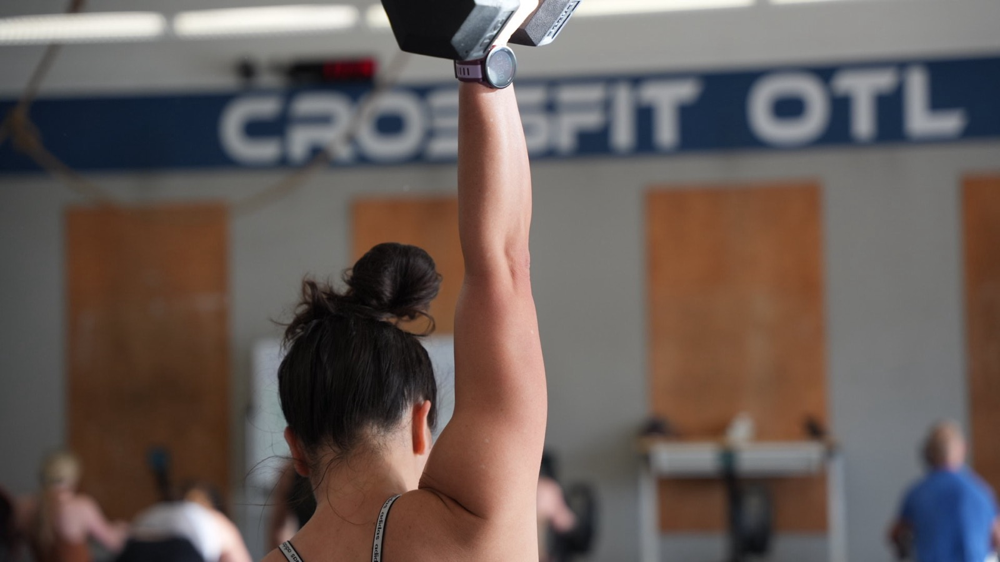
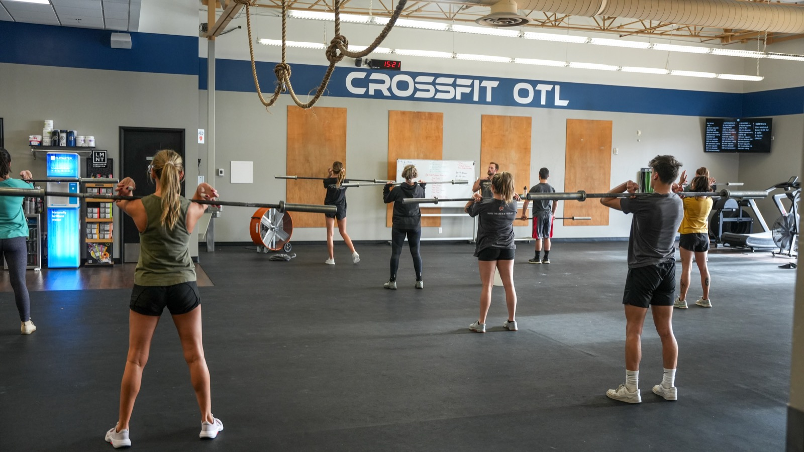
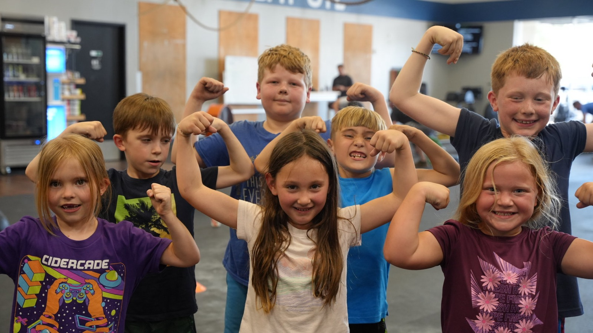
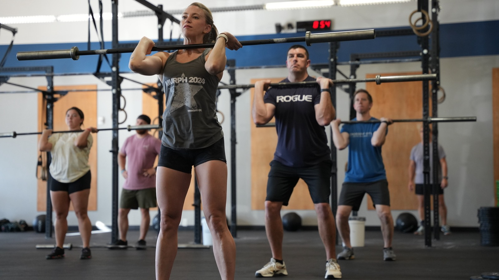
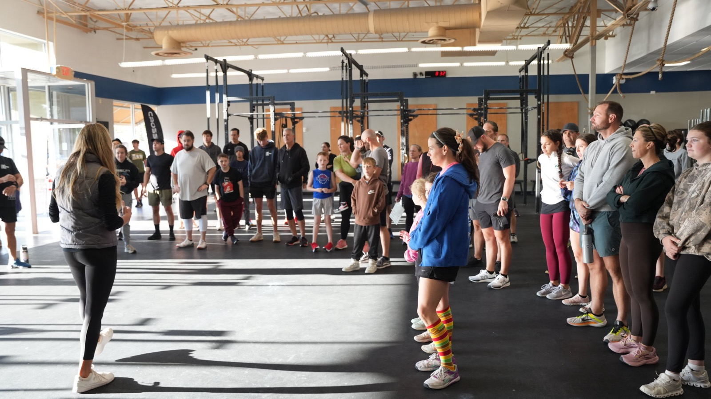

Walking through the door was the hard part. Most people who think about doing this never do it — they talk themselves out of it, or someone talks them out of it for them. You didn't. That already separates you.
We started this in a garage. Four or five women training in a driveway, a set of barbells, some rubber floor, and a pull-up rig. Then the homeschool boys came at 9am. Then the kids at 4pm. In February 2022 we opened the doors on Blvd 26, and thirty of those garage people came with us.
We are a family business in the plainest sense of the phrase. Isabel and her husband Clay coach here. Nicholas and his wife Ava coach here. Deanie's twin sister Lamar coaches here. We built this gym around our own kids' futures, and we run it the way we'd want a gym run for our own family — because it is one.
Here's what we ask of you: show up, ask questions, and tell your coach the truth — about your history, your injuries, your sleep, what you ate. We can work with anything you tell us. We can't work with what you hide.
Here's what we owe you in return: a coach who knows your name and your goal before you walk in, programming that scales to exactly where you are today, and an honest answer every time you ask for one.
Let's get to work,
The Jaime Family
Javier & Deanie · Isabel & Clay · Nicholas & Ava
Because that is exactly what CrossFit did for the Jaime family first — and then for everyone who walked in after them.
Javier found CrossFit in 2012 and it changed him. Then it changed Deanie. Then Isabel and Nicholas. Then the handful of neighbors training in their garage. This gym exists because that ripple kept going — and you are the next person in it.
What did the changing is ordinary and repeatable: movements you already use — squatting, picking things up, pressing overhead, carrying, running — done well, done at an intensity that's right for you, and repeated until your body adapts.
Every workout we program scales. The 62-year-old grandmother and the former college athlete do the same workout on the same day with different loads, different reps, and different movements. Same stimulus. Same hour. Same room.
We won't promise you quick results, because there aren't any worth having. We won't compete with a big-box gym on price — different product. And we won't tell you this is easy. It isn't. That's the entire point.
CrossFit's own definition is one line: constantly varied functional movements performed at high intensity. Every word in it is doing work.
The workout changes every day on purpose. Your body adapts to what it can predict — so we don't let it predict. Broad, general readiness beats a narrow specialty.
Movements that move large loads long distances, quickly — and that mirror what real life asks of you: stand up, pick it up, put it overhead, carry it, go.
Intensity is relative to you, and it's where results come from. Your intensity on day one and on day four hundred are different numbers doing the same job.
The goal is work capacity across broad time and modal domains — being good across short and long efforts, across lifting and gymnastics and cardio, rather than excellent at one thing and helpless at the rest. That's a deliberate bet that life doesn't tell you in advance what it's going to demand.
We will answer any question you have, any time. But the members who understand why we program the way we do stop needing to ask — and they train better for it. All of this is public and most of it is free.
The actual textbook, free to download at crossfit.com. Mechanics, the nine foundational movements, nutrition, programming, and scaling. Almost no members read it. The ones who do change how they train.
The archive of foundational articles — including "What Is Fitness?" (2002), which lays out the ten general physical skills, the three metabolic pathways, and the sickness-to-fitness continuum this gym is built on.
Daily programming, movement standards, and demo videos for every lift and gymnastics skill we run. Good place to review a movement the night before.
You do not have to want to coach. Some of our strongest members took the L1 purely to understand the why. Talk to Javier or any of the staff — every one of us has been through it, and we will tell you honestly whether it's worth your weekend.
Every one of us is credentialed by CrossFit, and most of us are related — this gym was founded by a family and is still coached by one. Isabel and Nicholas started CrossFit as kids, so they know these movements and this methodology as well as coaches twelve years in. Ask any of us anything.
Coached at a YMCA at 25, found CrossFit in 2012, ran the garage gym for six years before CrossFit OTL opened. Earned his Level 3 in July 2026.
CF-L3A former VP of Human Resources in healthcare before this. If something about your membership needs sorting out, she is who to see.
CF-L2Started CrossFit as a kid herself. Assistant-coached CrossFit Kids from age 14 and earned her L1 at 17.
CF-L2 · L3 CANDIDATEMarried to Isabel. Also credentialed in Olympic weightlifting and the ATG "knees over toes" system — talk to him about barbell positions and joint health.
CF-L2 · USAW-L1 · ATGStarted CrossFit as a kid and earned his L1 at 17. Coaches mechanics and positions closely — if something is not clicking for you, go find him.
CF-L2Married to Nicholas. Coaches adult and youth classes, and is working toward her Level 2.
CF-L1Deanie's twin sister and one of the original garage-gym crew — in this since the driveway boot-camp days.
CF-L2Coaches the 5AM class. A full-time teacher, here before her school day starts.
CF-L2Came up through our youth program, then interned. Now coaches teens and adults.
CF-L1A member for three years with her family before she started coaching.
CF-L1A full-time teacher who coaches adult and youth classes as she can.
CF-L1Sixty minutes, five parts, every time. Arrive ten minutes early for your first few.
Your coach walks the whole class through the day: what the workout is, what it's supposed to feel like, the target time or rounds, and how each track scales. If you don't know which track is yours, this is when you ask.
Coach-led and specific to the day's movements. Not filler — it's how we get your joints and nervous system ready for what's coming.
Technique work, or a strength piece under a barbell. Some days this is the hour. Weight goes up over months, not weeks.
The conditioning piece. Your coach is moving the whole time — correcting positions, adjusting loads, and holding people to the intended pace. On "for time" workouts, the class stays until the last athlete finishes.
Every workout ends with intentional cool-down stretching and recovery work — it's part of the session, not an optional add-on. Your coach also uses this time for announcements and a preview of tomorrow's workout, so you know what you're walking into.
Someone is. Nobody cares, and the class stays with you. On "for time" workouts nothing gets torn down until every person is finished and the coach releases the class.
Then you do the version you can do. That's what scaling is. Your coach will hand it to you before you have to ask.
No. That's like showering before the shower. Come as you are — we start where you are.
Most gyms won't tell you this. People quit CrossFit at predictable moments, for predictable reasons. None of it is a sign that it isn't working. We're telling you now so that when it happens, you recognize it instead of believing it.
Not because CrossFit is uniquely brutal, but because in a coached class you work harder than you ever would alone, using muscles you haven't used in years. This is the single most common week to quit. It passes. Come back sore — moving helps.
A grandmother. A stay-at-home mom. Someone half your size. It stings, and it's the most reliable proof that this room is doing something. They started before you did. That's the whole difference.
This is a long-adaptation program. The scale is a lagging indicator and a bad one. Track your lifts, your reps, and your InBody instead — those move first, and they move honestly.
Ten classes the first month, five the second, none the third — and you never actually decided to quit. This is how it ends for most people. The fix is a standing appointment: pick your days now, put them on the calendar, and treat them like work.
Attend fifteen or more classes in a month and the app puts you in that month's Committed Club. You get that month's sticker. Keep stacking them and gear comes at the milestones — twelve months, twenty-four months, and beyond. Sit with what that actually means: fifteen classes a month, every month, for a year. Then two.
We track it because it is the single best predictor we have of two things: who is rooted in this community and isn't going anywhere, and who is going to set personal records and measurably improve their fitness and health. It isn't a guarantee — nothing here is. It's the strongest signal we've found, and the people in the club month after month are the ones whose lives visibly change.
The other thing that happens: if you're open to it, you'll make real friends here. Some of ours got married — Isabel and Clay met on this floor. Others just ended up standing in each other's weddings.
Reserve your spot in the member app. Classes fill — book ahead, and cancel if plans change so someone else can take the slot.
| Time | Mon – Thu | Friday |
|---|---|---|
| 5:00 AM | CrossFit | CrossFit |
| 6:00 AM | CrossFit | CrossFit |
| 7:00 AM | CrossFit | CrossFit |
| 8:30 AM | CrossFit | CrossFit |
| 12:00 PM | CrossFit | CrossFit |
| 4:00 PM | CrossFit · Kids · Teens | CrossFit · Kids · Teens |
| 5:00 PM | CrossFit · Teens | — |
| 6:00 PM | CrossFit · Teens | — |
| Saturday | Class |
|---|---|
| 8:30 AM | CrossFit — the long one. Partner workouts, community day. |
Reserve through the member app. Your photo is on file, so every coach knows who you are before you walk in — that's deliberate.
If you can't make a class you booked, cancel it. Classes have caps and a no-show holds a spot someone else wanted.
Classes start and finish on time because the next class is waiting. That's not a rule we enforce — it's just how we treat the people coming in behind us. Be on the floor and ready at the top of the hour.
Late arrivals miss the warm-up. If you're late, find the coach before you jump in.

Short list. All of it is about safety, respect for the space, and not making the next class worse.
A running class gets first claim on all floor space, all equipment, and the coach's attention. Development Time works around the class, never the other way around.
On "for time" workouts people finish at different times. Nobody breaks down equipment until everyone is done and the coach tells the class to put it away. Then: bars stripped, plates racked by size, dumbbells and kettlebells home, rowers reset.
Anything you bled, sweat, or chalked on gets cleaned before you leave. Every time.
Use it over the bucket, not over the floor. Small thing, big difference on a rubber floor.
Never drop an empty barbell. Never drop a bar loaded only with 10-pound plates. Change plates — the small rubber-coated metal ones — are never dropped, and should only be on a bar alongside a larger-diameter rubber plate. Everything else comes down under control.
Every score gets logged — RX, intermediate, or beginner, no shame in any of them. Untracked training is a guess.
During any active workout session, children stay on the designated brown wooden floor — never on the black rubber. On the black floor they must be with a parent and must not touch equipment. We are not childcare; parents are responsible for their kids at all times.
Before class, not after the workout. Old surgeries, bad shoulders, pregnancy, a rough night of sleep — all of it changes what we program for you that day.
Recovery is programmed, not optional — and it's when you'll hear announcements and tomorrow's preview. Leaving early means missing both.
Non-negotiable. That person is working harder than anyone still standing.
We've had a member go down on this floor with a heart attack. The people around him did the right things — but nobody could tell the 911 dispatcher where they were. Read this page once, today, so that never happens again.
It is also posted on the front door. Look at it on your way in this week so you know exactly where it is. A dispatcher cannot send anyone until they have an address — that is the single thing that costs the most time.
Mounted on the wall, right by the fountains. Walk over and look at it today so you're not hunting for it under pressure. It talks you through every step out loud once it's open — you do not need training to use it, and using it early is what saves people.
For everything smaller — a torn hand, a scrape, a bad shin — ask your coach for the first aid kit. Don't dig for it and don't tough it out; just ask.
Don't freeze and don't crowd. Three jobs, assigned out loud:
Your coach runs the scene. If you're not doing one of those three jobs, clear the space and keep the floor open.
Group class is the backbone. Everything else exists to get you into it well, or to get you further once you're in.
If you're new to CrossFit, you start here — one-on-one, not in a group class. Three sessions covering the fundamental movements, how we scale, the vocabulary, and what intensity should feel like. Dropping someone into a class they don't understand is the fastest way to make them quit.
Unlimited, coach-led, every session scaled three ways. This is where the work happens and where the community lives.
Included with your Unlimited membership. Development Time is extra time on the floor to build your own strength and skills — a lift you're working on, a movement you're chasing, or accessory work your coach gave you. It's not open gym; it's your time to develop something specific. Use whatever part of the gym a class isn't using, and give the running class first call on space and equipment.
What we recommend to most people who walk in wanting a real change rather than a gym membership. Twelve weeks, built around one-on-one attention:
One-on-one sessions for a specific goal, a specific lift, or a return from injury. On its own or alongside group class.
Habit tracking with regular dialogue with a coach. Training is one hour. Nutrition is the other twenty-three, and it decides most outcomes.
Every new member gets one free. If you didn't get yours at your consultation, ask Javier or Deanie and we'll set it up. After that, scans are $35 and open to anyone, any time.
Most gyms run kids classes after school as a separate program. We don't, and the reason is the most deliberate design decision in this building.
Kids and Teens classes run at the same hours as adult classes. When you're training on one side of the floor, your kid is training on the other. You arrive together, you work at the same time, you leave together.
And we run them year-round — same calendar as the adults, not on a sports season.

Kids install their defaults from their families, not from their coaches. A kid whose fitness is tied to football season stops training when the season ends — the training belonged to the team, the coach, and a schedule someone else set. Most of those kids never come back to it as adults. They peaked at seventeen.
A kid who trains while mom and dad train associates fitness with the family, not the season. When school sports end, nothing changes here. That's the version that holds.
Let athletics shape ability. Let the lifestyle shape the body and the long-term default. Those are two different jobs, and this gym is built to do the second one.
Do these four things in your first week. It takes about ten minutes total.
Reservations, your workout history, and your logged scores all live here. Book at least your first week of classes now — deciding in the morning is how the 5AM stops happening.
This is where everything lives: gym announcements, events, member shoutouts, and the day-to-day community conversation. It's all in the app, so check the Social tab like you'd check a feed.
Events, workouts, member milestones, and the occasional thing your coach said that shouldn't have been recorded.
Every new member gets one free. If you didn't get yours at your consultation, ask Javier or Deanie. Do it in your first week, before anything changes — muscle, fat, and water measured directly is the only way to know later whether what you're doing is working, and it's everything a bathroom scale can't tell you.

What we keep on the shelf, who we trust when your body needs more than training, and how to handle the administrative stuff without guessing.
Up front we stock Thorne supplements, protein, collagen, creatine, LMNT, and Proletas protein ice cream bars. Beyond what's on the shelf, you have access to our full Thorne online dispensary at thorne.com/u/Crossfitotl.
Our own CrossFit OTL merch is in the store on crossfit-otl.com, and we partner with apparel and CrossFit gear providers for shoes, grips, belts, and the rest. Ask a coach what's worth buying before you buy it — some of it you don't need yet.
We run them, and we mean it — tell people what changed for you and bring them in. Have your guest sign the waiver before class so they walk straight onto the floor instead of filling out forms.
Traveling, injured, or need to step away? The pause and cancellation forms are on crossfit-otl.com. Use them — don't just stop showing up.
We sponsor and partner with local providers in physical therapy, chiropractic care, and recovery services. If something hurts — or you want to get ahead of it before it does — ask any coach or staff member for a referral. We will point you to people we actually trust, not a search result.

Nothing in this packet matters as much as the next sixty days of attendance. Pick your class times, put them on the calendar, and come even on the days you don't feel like it — especially on those days. That's the whole method.